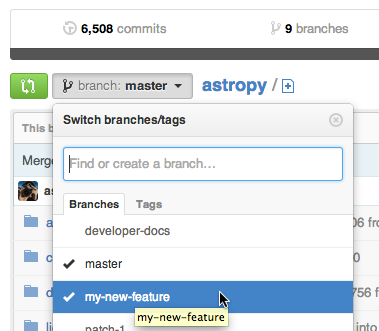

Development Details Guidelines#
Template
Template for further usage, template belong to astropy.
This document contains somewhat-independent sections that provide details on topics covered in the Quickstart Contributing Guidelines guide.
Pre-commit#
All of the coding style checks described in PEP8, as enforced by flake8 can be performed automatically
when you make a git commit using our provided pre-commit hook
for git, for more information see
git hooks.
We encourage you to setup and use these hooks to ensure that your code always meets
our coding style standards. The easiest way to do this is by installing pre-commit:
python -m pip install pre-commit
Or if you prefer conda:
conda install pre-commit
This next command needs be done by installing pre-commit in the root
of your astropy repository by running:
pre-commit install
For more detailed instructions on installing pre-commit, see the
install guide. Once this installation is
complete, all the coding style checks will be run each time you commit and the
necessary changes will automatically be applied to your code if possible.
Note
The changes made by pre-commit will not be automatically staged, so you
will need to review and re-stage any files that pre-commit has changed.
In general, git will not allow you to commit until the pre-commit hook has
run successfully. If you need to make a commit which fails the pre-commit checks,
you can skip these checks by running:
git commit --no-verify
If you do not want to use pre-commit as part of your git workflow, you can
still run the checks manually (see, PEP8, as enforced by flake8) using:
tox -e codestyle
Or this will run whether you did pre-commit install or not:
pre-commit run
Again, this will automatically apply the necessary changes to your code if possible.
Note
Once you have made a pull-request the pre-commit.ci bot is available to assist
you with fixing any issues with your code style, see Fixing coding style issues for details
on how to use this bot.
The editing workflow#
Conceptually, you will:
Make changes to one or more files and/or add a new file.
Check that your changes do not break existing code.
Add documentation to your code and, as appropriate, to the Astropy documentation.
Ideally, also make sure your changes do not break the documentation.
Add tests of the code you contribute.
Commit your changes in git.
Repeat as necessary.
In more detail#
Make some changes to one or more files. You should follow the Astropy Coding Guidelines. Each logical set of changes should be treated as one commit. For example, if you are fixing a known bug in Astropy and notice a different bug while implementing your fix, implement the fix to that new bug as a different set of changes.
Test that your changes do not lead to regressions, i.e. that your changes do not break existing code, by running the Astropy tests as described in Testing Guidelines.
Make sure your code includes appropriate docstrings, in the Numpydoc format. If appropriate, as when you are adding a new feature, you should update the appropriate documentation in the
docsdirectory; a detailed description is in Documentation Guidelines.If you have sphinx installed, you can also check that the documentation builds and looks correct by running, from the
astropydirectory:cd docs make html
The last line should just state
build succeeded, and should not mention any warnings. (For more details, see Documentation Guidelines.)Add tests of your new code, if appropriate. Some changes (e.g. to documentation) do not need tests. Detailed instructions are at Writing tests, but if you have no experience writing tests or with the pytest testing framework submit your changes without adding tests, but mention in the pull request that you have not written tests. An example of writing a test is in Stop and think: Any more tests or other changes?.
Stage your changes using
git addand commit them usinggit commit. An example of doing that, based on the fix for an actual Astropy issue, is at Contributing Code: a Worked Example.Note
Make your git commit messages short and descriptive. If a commit fixes an issue, include, on the second or later line of the commit message, the issue number in the commit message, like this:
Closes #123. Doing so will automatically close the issue when the pull request is accepted.Some modifications require more than one commit; if in doubt, break your changes into a few, smaller, commits rather than one large commit that does many things at once. Repeat the steps above as necessary!
Add a changelog entry#
Add a changelog fragment briefly describing the change you made by creating
a new file in docs/changes/<sub-package>/. The file should be named like
<PULL REQUEST>.<TYPE>.rst, where <PULL REQUEST> is a pull request
number, and <TYPE> is one of:
feature: New feature.api: API change.bugfix: Bug fix.perf: Performance improvement (this should be significant enough to be measurable using the public API).other: Other changes and additions.
An example entry, for the changes in PR 1845, the file would be
docs/changes/wcs/1845.bugfix.rst and would contain:
``astropy.wcs.Wcs.printwcs`` will no longer warn that ``cdelt`` is
being ignored when none was present in the FITS file.
If you are opening a new pull request, you may not know its number yet, but you can add it after you make the pull request. If you’re not sure where to put the changelog entry, wait at least until a maintainer has reviewed your PR and assigned it to a milestone.
When writing changelog entries, do not attempt to make API reference links by using single-backticks. This is because the changelog (in its current format) runs for the history of the project, and API references you make today may not be valid in a future version of Astropy. However, use of double-backticks for monospace rendering of module/class/function/argument names and the like is encouraged.
Make a pull request#
A pull request on GitHub is a request to merge the changes you have made into another repository.
You can follow the steps outlined in the GitHub documentation Creating a pull request, or follow the steps below.
When you are ready to ask for someone to review your code and consider merging it into Astropy:
Go to the URL of your fork of Astropy, e.g.,
https://github.com/your-user-name/astropy.Use the ‘Switch Branches’ dropdown menu to select the branch with your changes:

Click on the ‘Pull request’ button:

Enter a title for the set of changes, and some explanation of what you’ve done. If there is anything you’d like particular attention for, like a complicated change or some code you are not happy with, add the details here.
If you don’t think your request is ready to be merged, just say so in your pull request message. This is still a good way to start a preliminary code review.
You may also opt to open a work-in-progress pull request. If you do so, instead of clicking “Create pull request”, click on the small down arrow next to it and select “Create draft pull request”. This will let the maintainers know that your work is not ready for a full review nor to be merged yet. In addition, if your commits are not ready for CI testing, you should also use
[ci skip]or[skip ci]directive in your commit message. For usage of pre-commit hooks and directives, see Pre-commit and Fixing coding style issues.
Do Not Create a Merge Commit#
If your branch associated with the pull request falls behind the main
branch of astropy/astropy, GitHub might offer you the option
to catch up or resolve conflicts via its web interface, but do not use this. Using
the web interface might create a “merge commit” in your commit history, which is
undesirable, as a “merge commit” can introduce maintenance overhead for the
release manager as well as undesirable branch structure complexity. Do not use the git pull command either.
Instead, in your local checkout, do a fetch and then a rebase, and
resolve conflicts as necessary. See Rebase if necessary and How to rebase
for further information.
Rebase if necessary#
Rebasing means taking your changes and applying them to the latest
version of the main branch of the official astropy repository as though that was the
version you had originally branched from. Each individual commit remains
visible, but with new commit hashes.
When to rebase#
Pull requests must be rebased (but not necessarily squashed to a single commit) if at least one of the following conditions is met:
There are conflicts with
main.There are commits in
main(after the PR branch point) needed for continuous integration tests to run correctly.There are merge commits from
astropy/mainin the PR commit history (merge commits from PRs to the user’s fork are fine).
How to rebase#
It is easier to make mistakes rebasing than other areas of git, so before you start make a branch to serve as a backup copy of your work:
git branch tmp my-new-feature # make temporary branch--will be deleted later
After altering the history, e.g., with git rebase, a normal git push
is prevented, and a --force option will be required.
Warning
Do not update your branch with git pull. Pulling changes from
astropy/main includes merging the branches, which combines them in a
way that preserves the commit history of both. The purpose of rebasing is
rewriting the commit history of your branch, not preserving it.
Behind the scenes, git is deleting the changes and branch you made, making the changes others made to the development branch of Astropy, then re-making your branch from the development branch and applying your changes to your branch.
First, fetch the latest development astropy and go to your branch of interest:
git fetch upstream main
git switch my-new-feature
Now, do the rebase:
git rebase upstream/main
You are more likely to run into conflicts here — places where the changes you made conflict with changes that someone else made — than anywhere else. Ask for help if you need it. Instructions are available on how to resolve merge conflicts after a Git rebase.
Squash if necessary#
Squashing refers to combining multiple commits into a single commit. This can be done
using the git rebase command or via Github ‘Squash and merge’.
An Astropy maintainer will be happy to guide you through this process.
When to squash#
If a pull request contains commits with large (approximately > 10KB) intermediate
changes which are ultimately removed or modified in the PR, the intermediate diffs
must be squashed. An example is adding a large data file in one commit and then
removing it in a subsequent commit. The goal is to avoid an unnecessary increase in the
size of the astropy repository.
Squashing commits is encouraged when there are numerous commits which do not add value to the commit history. Most small to medium pull requests can be done with a few commits. Some large or intricate pull requests may require more commits to capture the logical progression of the changes.
In general, commits that reflect a specific atomic change (e.g., “Fixed bug revealed by tests for feature X”) may have value for the history.
Commits that are good candidates for squashing include but not limited to:
Content that gets removed later, most commonly changes in the implementation or temporary debugging code or, especially, data files (see above).
Non-specific commits; e.g., “Added more code and fixed stuff.”
Fixes of typos, linting fixes, or other inconsequential changes.
Commit messages that violate the code of conduct.
How to squash#
In many cases, squashing can be done by a maintainer using the Github ‘Squash and merge’ button on the GitHub pull request page. If this is not possible, we typically squash using git rebase –interactive. In particular, you can rebase and squash within the existing branch using:
git fetch upstream main
git rebase -i upstream/main
The last command will open an editor with all your commits, allowing you to squash several commits together, rename them, etc. Helpfully, the file you are editing has the instructions on what to do.
How to push#
After using git rebase you will still need to push your changes to
GitHub so that they are visible to others and the pull request can be
updated. Use of a simple git push will be prevented because of the
changed history, and will need to be manually overridden using:
git push origin my-new-feature --force
If you run into any problems, do not hesitate to ask. A more detailed conceptual discussing of rebasing is at Rebasing on main.
Once the modifications and new git history are successfully pushed to GitHub you can delete any backup branches that may have been created:
git branch -D tmp
Troubleshooting the build#
If when building you get an error directing use of option -std=c99 or
-std=gnu99, you can try installing with:
CFLAGS='-std=c99' python -m pip install --editable .
This is necessary for use with CentOS7.
External C Libraries#
The astropy source ships with the C source code of a number of
libraries. By default, these internal copies are used to build
astropy. However, if you wish to use the system-wide installation of
one of those libraries, you can set environment variables with the
pattern ASTROPY_USE_SYSTEM_??? to 1 when building/installing
the package.
For example, to build astropy using the system’s expat parser
library, use:
ASTROPY_USE_SYSTEM_EXPAT=1 python -m pip install --editable .
To build using all of the system libraries, use:
ASTROPY_USE_SYSTEM_ALL=1 python -m pip install --editable .
The C libraries currently bundled with astropy include: